時光智造 AI 智能客服系統
從零開始搭建你的專屬 AI 客服
第一部分：快速入門
1. AI 訓練 — 最重要的核心功能
核心功能：AI 訓練是系統的核心功能，支援多租戶架構（每個公司一個租戶，數據完全隔離）。提供 17 種行業模板，配備互動教程和 AI 智能生成功能，讓你快速建立專屬行業 AI 客服。
核心特色：
- 多租戶架構：每個公司擁有獨立租戶，數據完全隔離，確保商業機密
- 17 種行業模板：餐飲、旅遊、電商、醫療、健身、美容、教育、金融、物流、房地產、保險、法律、飯店、電信、寵物、診所、通用
- 互動教程：新用戶首次進入自動引導，也可隨時點「教程導覽」按鈕重新學習
- AI 智能生成：上傳業務文件（PDF、Word、Excel），AI 自動生成 20 組訓練對話
- AI 持續學習：收集未解答問題 → AI 生成知識庫建議 → 一鍵採用
操作步驟：
- 進入「AI 訓練」頁面
- 首次進入會自動啟動互動教程，跟著引導操作
- 點擊「＋」建立新租戶，填寫公司名稱、選擇行業
- 系統自動載入該行業的預設意圖（5-6個）和知識庫
- 切換到「對話訓練」分頁，點擊「🪄 智能生成」
- 上傳業務文件（PDF、Word、Excel 等），AI 自動生成 20 組對話
- 審核對話 → 點「🔍 開始分析」→ AI 自動識別意圖和實體
- 切到「🧠 AI 學習」分頁，查看未解答問題，一鍵生成知識庫建議
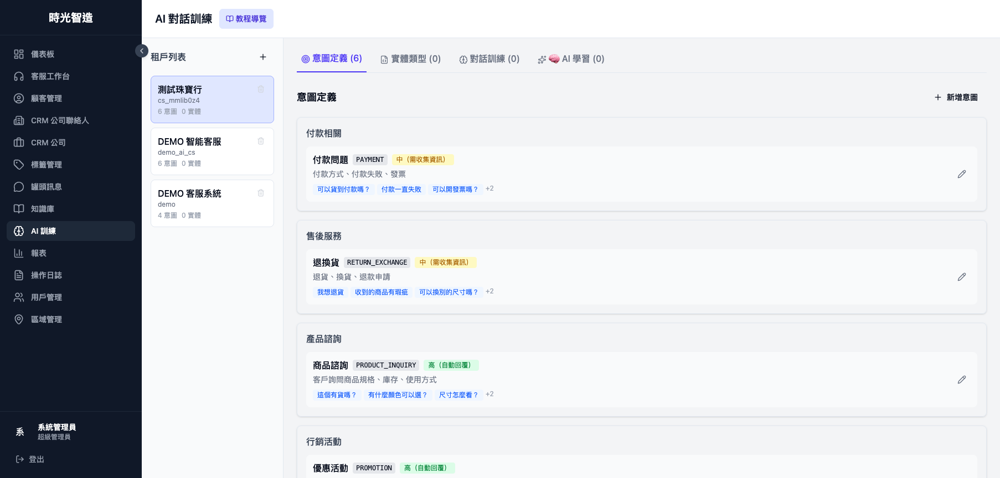
📖 互動教程展示
系統提供完整的互動教程，引導新用戶快速上手。以下是教程的關鍵步驟截圖：
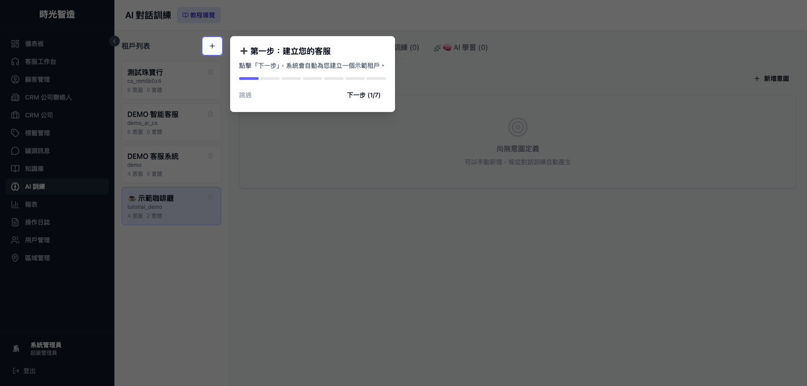
步驟1：建立租戶
選擇行業模板，填寫公司資訊
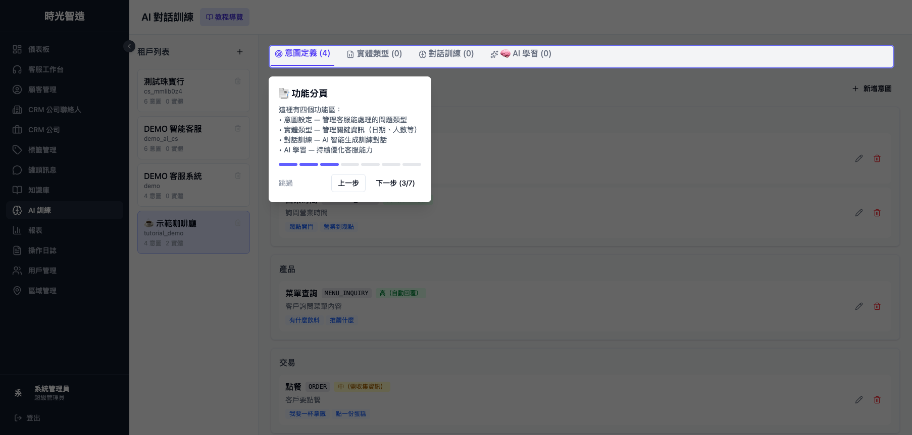
步驟3：意圖管理
查看預載的意圖和模擬數據
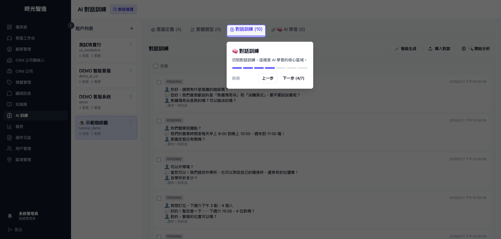
步驟4：對話訓練
瀏覽 10 組模擬對話範例
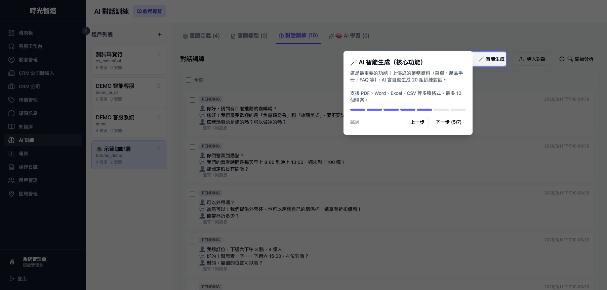
步驟5：AI 智能生成
上傳文件，AI 自動生成對話
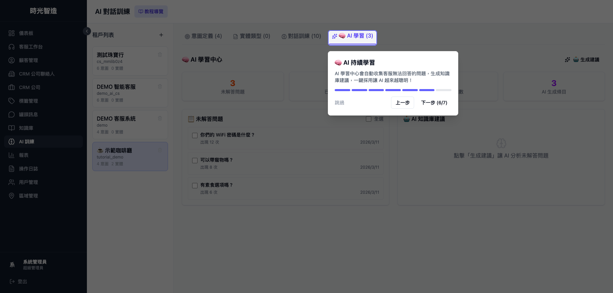
步驟6：AI 持續學習
檢視未解答問題，生成建議
2. 網站嵌入 Widget — 讓任何網站擁有 AI 客服
核心功能：只需一行代碼，即可讓任何網站擁有智能客服功能。右下角浮動聊天氣泡，自動載入租戶知識庫，手機友好。
Widget 特色：
- 極簡安裝：只需一行 JavaScript 代碼即可嵌入
- 浮動氣泡：右下角聊天氣泡，不影響網站原有設計
- 自動載入：根據租戶代碼自動載入對應的知識庫和訓練模型
- 響應式設計：完美支援桌面和手機版，自適應螢幕大小
- 可客製化：支援自定義主色調、位置等視覺設定
嵌入步驟：
- 從 AI 訓練頁面複製您的租戶代碼
- 將以下代碼貼到您網站的
</body>標籤前 - 將代碼中的「你的租戶代碼」替換為實際的租戶代碼
- 儲存並上傳網站文件
- 開啟網站即可看到右下角的聊天氣泡
基本嵌入代碼：
<script src="https://ai-customer-service.timux.site/widget.js" data-tenant="你的租戶代碼"></script>
<script src="https://ai-customer-service.timux.site/widget.js" data-tenant="你的租戶代碼"></script>
自定義選項：
<script src="https://ai-customer-service.timux.site/widget.js"
data-tenant="你的租戶代碼"
data-color="#3498db"
data-position="right"></script>
<script src="https://ai-customer-service.timux.site/widget.js"
data-tenant="你的租戶代碼"
data-color="#3498db"
data-position="right"></script>
可用選項：
data-color：主色調（如：#3498db）data-position：位置（right / left）data-tenant：租戶代碼（必填）
3. 渠道配置 — 連接你的通訊平台
核心功能：區域管理是配置渠道的地方，將 AI 客服連接到 LINE 等通訊平台。
操作步驟：
- 進入「區域管理」頁面
- 點擊「新增區域」或編輯現有區域
- 填寫 LINE Channel ID 和 Secret
- 選擇 AI 訓練集（綁定剛才建立的租戶）
- 設定工作時間和圖片選單
- 複製 Webhook URL 到 LINE Developers Console
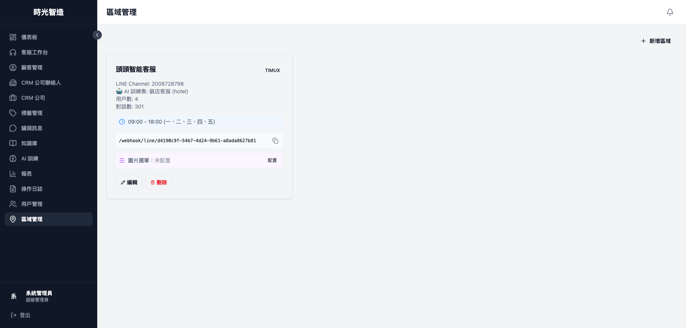
4. 客服工作台 — 即時接管 AI 對話
核心功能：當 AI 無法回答或客戶需要人工服務時，客服人員可以在工作台接管對話。
操作步驟：
- 進入「客服工作台」頁面
- 左側顯示等待中的對話佇列（按優先級排序）
- 點擊任意對話即可接管，AI 暫停回覆
- 使用右側罐頭訊息快速回覆
- 對話結束後點擊「關閉對話」並選擇歸類
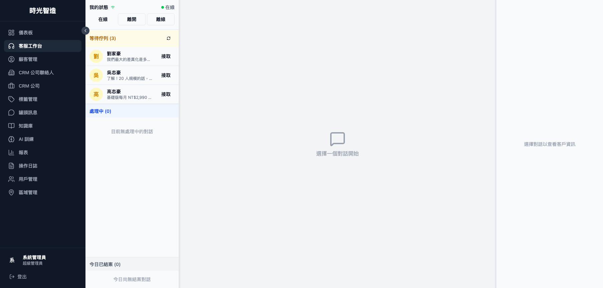
第二部分：ERP 管理功能
5. 儀表板 — 全局數據概覽
一站式查看關鍵指標：今日對話數、等待中對話、客服在線數、平均響應時間等。支援時間段篩選和趨勢圖表。
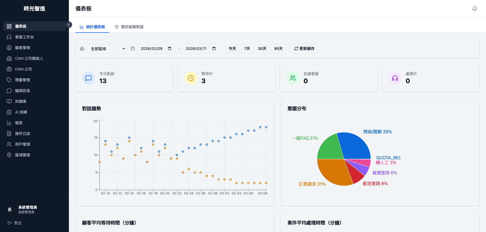
6. 顧客管理
管理所有來訪的顧客資訊，包括來源渠道、對話記錄、標籤分類。支援搜尋和篩選。
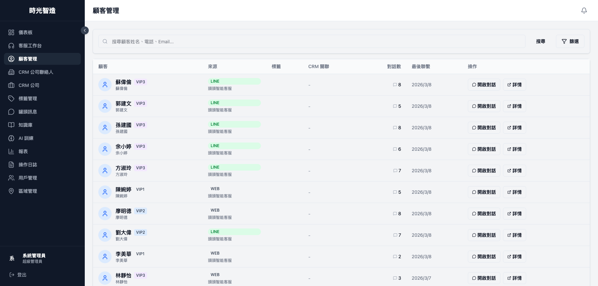
7. CRM 聯絡人
維護商務聯絡人資訊，關聯所屬公司，記錄跟進備註。支援匯入匯出。
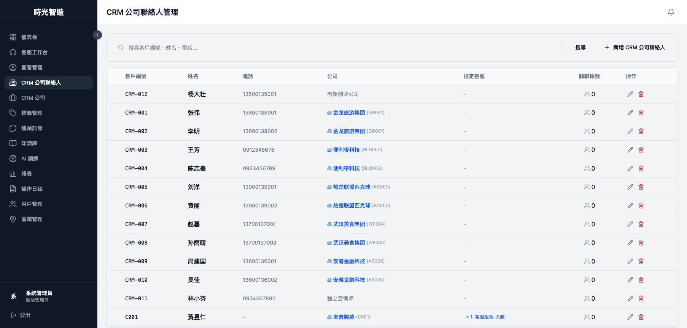
8. CRM 公司
管理合作企業資料，包括行業、網站、聯繫方式、地址等。每家公司可關聯多個聯絡人。
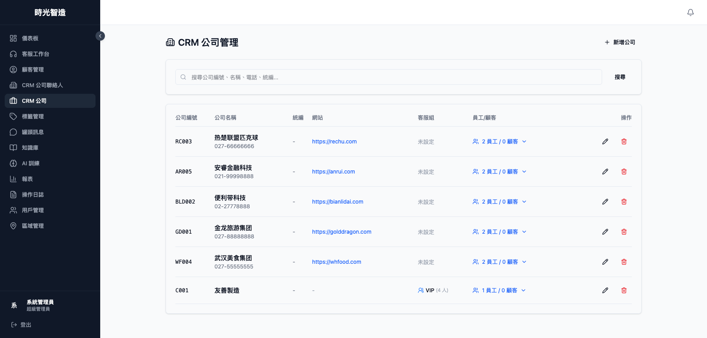
10. 罐頭訊息
預設常用回覆模板，客服人員在工作台可一鍵使用。支援分類和快捷鍵設定。
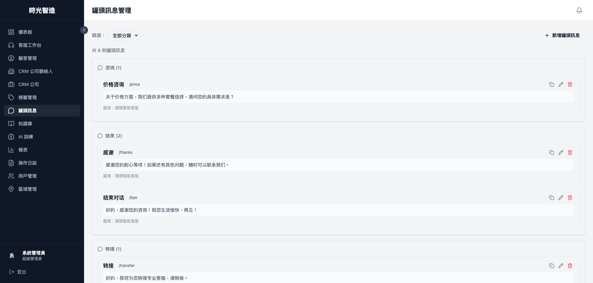
11. 知識庫
FAQ 知識庫管理，支援按分類組織。AI 可參考知識庫內容回覆客戶問題。
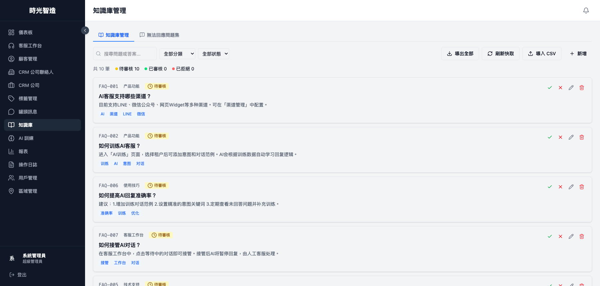
12. 報表
查看客服績效數據：對話量趨勢、響應時間、客戶滿意度、客服效率排名等。
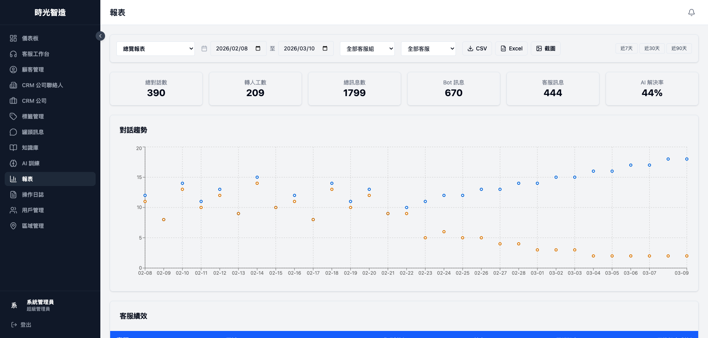
13. 操作日誌
記錄系統所有操作行為，支援按操作類型和時間篩選，確保安全稽核可追溯。
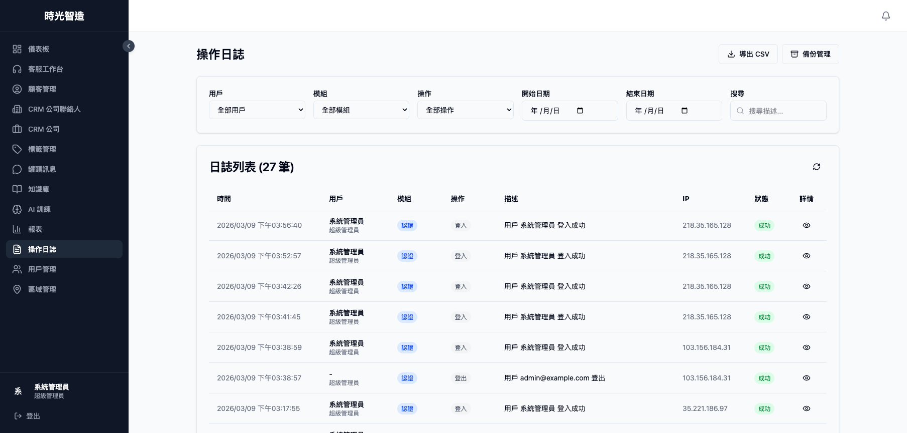
14. 用戶管理
管理系統用戶帳號和權限。支援三種角色：超級管理員、區域管理員、客服人員。可建立客服組別分配。
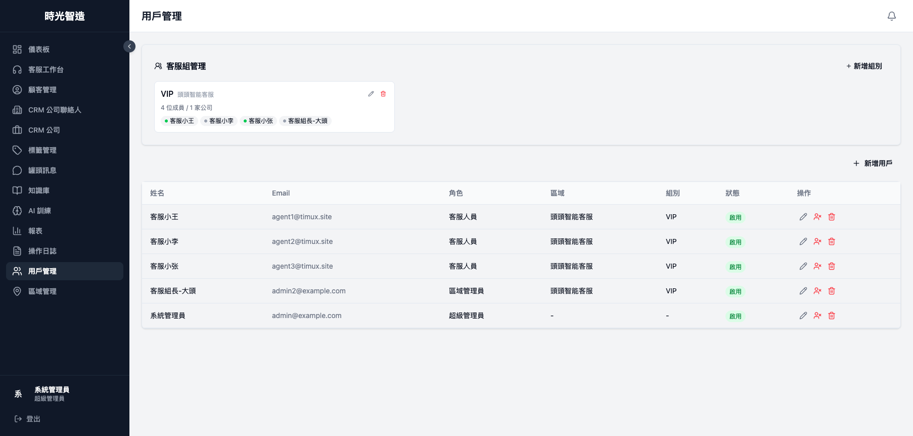